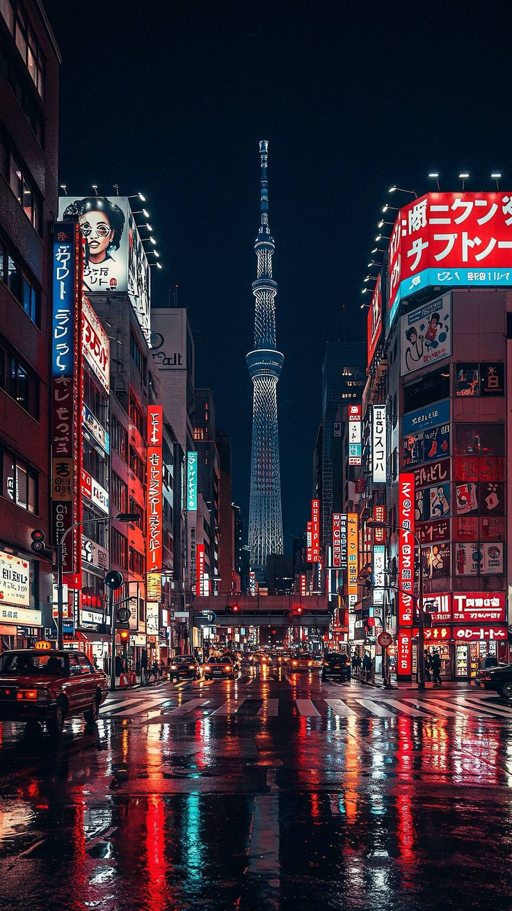
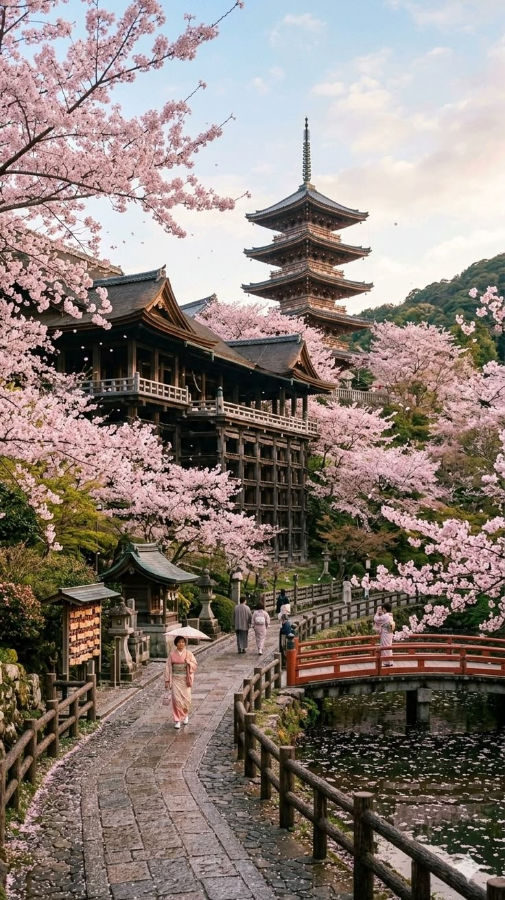
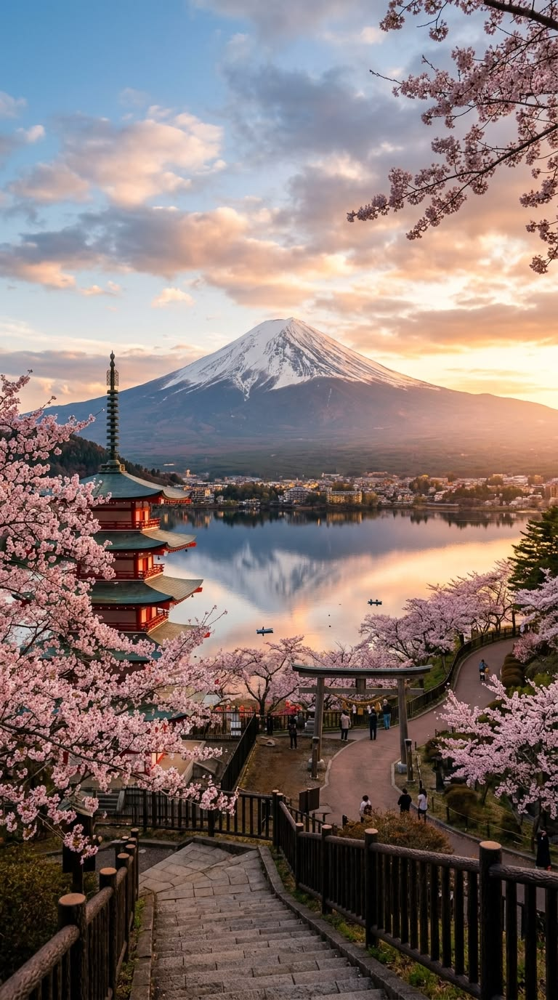
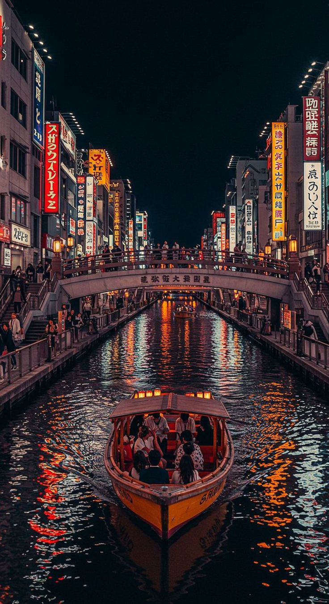
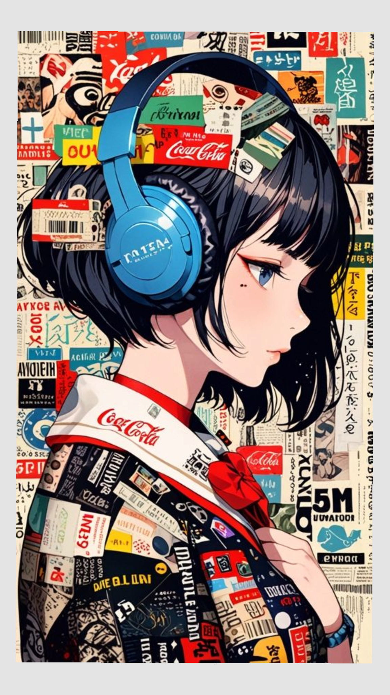

Tokio
Tokio es la capital de Japón y una de las ciudades más modernas del mundo.
Sus calles están llenas de pantallas gigantes, trenes futuristas, centros comerciales y tecnología.
- Shibuya Crossing
- Akihabara
- Torre de Tokio
- Templo Sensō-ji

Kioto
Kioto representa el Japón tradicional. Está llena de templos, jardines y calles históricas.
Muchas personas visitan Kioto para conocer la cultura japonesa más antigua.
- Templo Kinkaku-ji
- Bosque de Bambú
- Santuarios históricos
- Casas tradicionales

Monte Fuji
El Monte Fuji es el símbolo natural más famoso de Japón.
Miles de turistas visitan el lugar para sacar fotos, caminar por sus senderos y disfrutar del paisaje.

Osaka
Osaka es famosa por su comida callejera, vida nocturna y enormes carteles luminosos.
Es una ciudad moderna y muy divertida para turistas.
- Dotonbori
- Universal Studios Japan
- Castillo de Osaka

Anime y Cultura Pop
Japón es el hogar del anime, manga y videojuegos.
Miles de turistas visitan Akihabara para comprar figuras, mangas y productos relacionados con el anime.
También existen cafés temáticos y enormes tiendas gamer.
CURIOSIDADES DE JAPÓN
🚄 Trenes Bala
Algunos trenes japoneses superan los 300 km/h.
🌸 Sakura
Los cerezos florecen durante la primavera.
🏯 Templos
Japón tiene miles de templos históricos.
🎌 Cultura
Japón mezcla tradición y tecnología futurista.